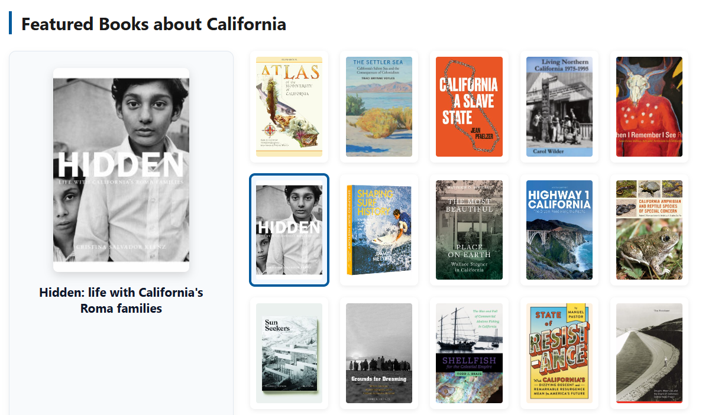

01
Book Cover Carousel
An interactive horizontal carousel for browsing featured books. Designed for library webpages, digital displays, and discovery interfaces.
Open interactive preview
A collection of experimental and reusable designs for presenting library books and digital collections online.
01
An interactive horizontal carousel for browsing featured books. Designed for library webpages, digital displays, and discovery interfaces.
Open interactive preview
02
A responsive book-display layout using a visual grid of covers. This design works well for themed reading lists and curated collections.
Open interactive preview
03
A shelf-inspired design that presents books as a browsable digital display while retaining the visual character of a physical library book exhibit.
Open interactive preview
04
A simplified display designed for large monitors and television screens in library spaces. Book covers remain prominent and readable from a distance.
Open interactive preview